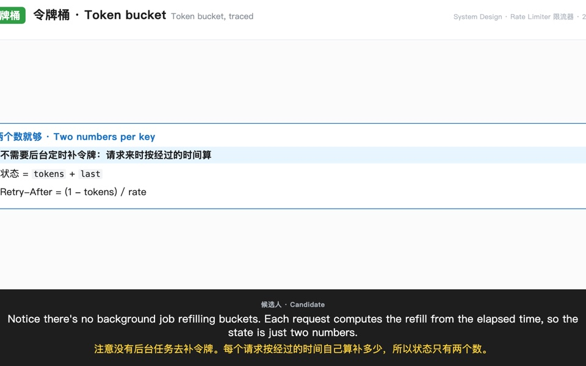

Nº08 · Personal tool · Oct 2026个人工具 · 2026 年 10 月Script-to-video pipeline · local speech synthesis · Playwright · ffmpeg脚本生成视频 · 本地语音合成 · Playwright · ffmpeg
Narrated Study Videos
I write a system-design or algorithm walkthrough as one sentence per line, and one command turns it into a narrated 1080p video with two voices, Chinese and English subtitles, and code traces taken from actually running the code.我把系统设计或算法讲解写成一行一句的脚本，一条命令就生成 1080p 讲解视频：两个声音、中英字幕，代码执行画面来自真跑代码。

01Problem问题
Explaining a design out loud is the part of an interview you can't practise by reading. Screen-recording myself is slow to redo, one typo means a full retake, and hand-drawn code traces are easy to get subtly wrong.把设计讲出来，是面试里光靠读资料练不到的部分。自己录屏改一次就得重来，一个口误就要整段重录；手画的代码执行过程也很容易出细微错误。
02How it works原理
- The script is the source of truth: each line is one spoken sentence, who says it, its Chinese subtitle and the scene shown while it plays. Fix one line and only that line is re-voiced.脚本是唯一来源：每行是一句话、谁说、中文字幕，以及这句话播放时的画面。改一行，只重新配这一行。
- Scenes are data, not drawings. A line names a layout (table, bullets, flow, code trace, array, linked list, tree, split) and its content; the engine renders it as HTML and screenshots it at 1920 × 1080.画面是数据，不是画出来的。每行指定一种版式（表格、要点、流程、代码执行、数组、链表、树、左右分栏）和内容；引擎把它渲染成 HTML，再按 1920 × 1080 截图。
- Code traces are generated by running the algorithm: the build script executes the code, records each step (line, variables, verdict) and asserts the expected result, so the picture cannot drift from what the code does.代码执行画面由真跑算法生成：构建脚本执行代码，记下每一步（行号、变量、结果），并断言预期输出，画面不可能和代码实际行为不一致。
- Each sentence becomes its own clip, sized to its audio plus a pause (0.9 s on a scene change, 0.6 s on a speaker change, 0.35 s otherwise); clips are concatenated and normalised to -16 LUFS, a common loudness target for online video.每句话单独成段，时长 = 音频 + 停顿（换画面 0.9 秒、换人 0.6 秒、其他 0.35 秒）；拼接后响度统一到 -16 LUFS，这是在线视频常用的响度标准。
03What I built我做了什么
- One engine, six commands:
check(missing audio or subtitles),tts(resumable),preview(one frame per distinct scene),render(one chapter or the whole video),install, plus a translation to-do list.一个引擎、六条命令：check（查缺音频或字幕）、tts（可续跑）、preview（每种画面出一帧）、render（单章或全片）、install，以及待翻译清单。 - Two voices on a local Kokoro server behind an OpenAI-compatible speech API: one for the candidate, one for the interviewer; interviewer subtitles sit on a different colour band.两个声音，跑在本地 Kokoro 服务上（兼容 OpenAI 语音接口）：候选人一个、面试官一个；面试官的字幕底条换颜色。
- Eleven built-in layouts; a topic can add its own scenes in a small Python hook without touching the engine.内置 11 种版式；专题可以在一个小的 Python 钩子里加自己的画面，不用改引擎。
- Preview before render: every distinct scene is screenshotted first, so overflowing labels and wrong states are caught in seconds, not after a full render. On the demo this caught a double-escaped
<and a design diagram that wrongly put Redis on the request path.先预览再渲染：每种画面先截一张图，文字溢出、状态错误几秒内就能发现，不用等全片渲染完。在演示视频里，这一步抓到了一个被转义两次的<，以及一张把 Redis 错画在请求路径上的架构图。 - Interview structure for system design: prompt, clarifying questions with what each answer locks in, functional and non-functional requirements, an estimate, the algorithm trade-off, the design, a deep dive with interviewer follow-ups, then a recap.系统设计按面试结构走：出题 → 澄清（每个答案锁定什么）→ 功能和非功能需求 → 估算 → 算法取舍 → 架构 → 深挖（面试官追问）→ 总结。
- Free and local: no paid API, no upload; the encoder comes from a pip package, so nothing is installed system-wide.免费、本地：不调付费 API、不上传；编码器来自 pip 包，不往系统里装东西。
04Watch it run看它运行
05Measured测量结果
4.5 min
rate-limiter video from a 40-line script: 696 words, 8 chapters, 2 voices限流器视频，来自 40 行脚本：696 个词、8 章、2 个声音
src · render log, 2026-10-15 (private)
0
speech retries across the 40 lines40 行配音的重试次数
src · speech log, 2026-10-15 (private)
8 MB
for the 1080p video: still frames encode small1080p 视频大小：静态画面压缩率高
src · output file, 2026-10-15
11
built-in scene layouts, from tables to step-by-step code traces种内置画面版式，从表格到逐步代码执行
src · engine source (private)
0
paid API calls; speech, frames and encoding all run on my own machines次付费 API 调用；配音、画面、编码全部在自己的机器上
src · pipeline config (private)
06Limits, stated plainly局限，直说
- Frames are still slides, not animation; motion comes from stepping through states one sentence at a time.画面是静态幻灯片，不是动画；「动」靠一句一步地切换状态。
- The voices are synthetic and sound like it; there is no emphasis control beyond punctuation.声音是合成的，听得出来；除了标点，没法控制重音。
- Chinese subtitles are a translation file per line; the engine does not check that they match.中文字幕是每行一条的翻译文件；引擎不检查译文是否对得上。
- Fonts and layout are tuned for macOS; another machine may wrap text differently.字体和排版按 macOS 调的；换台机器折行可能不同。
07Next下一步
- Word-level subtitle timing from the speech model's timestamps.用语音模型给出的时间戳做逐词字幕。
- A series of classic system-design questions in the same format.按同一格式做一组经典系统设计题。
- Publish the engine with the rate-limiter topic as its example.把引擎开源，限流器专题作为示例。